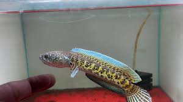

Channa aurantimaculata • สายสะสม / มีประสบการณ์

จุดนี้คือเหตุผลหลักที่หลายคนเลี้ยงไม่รอด
ปลาช่อนออแรนติจากธรรมชาติมีพฤติกรรมและการกินต่างจากปลาฟาร์ม
ผู้เลี้ยงควรมีประสบการณ์และความพร้อม
ทางร้านไม่แนะนำสำหรับมือใหม่
ปลาช่อนออแรนติเป็นปลานักล่าที่มีพฤติกรรมชัดเจน
การเลี้ยงต้องอาศัยความเข้าใจและความอดทน
เหมาะสำหรับผู้เลี้ยงที่ต้องการปลาช่อนสายธรรมชาติจริง ๆ